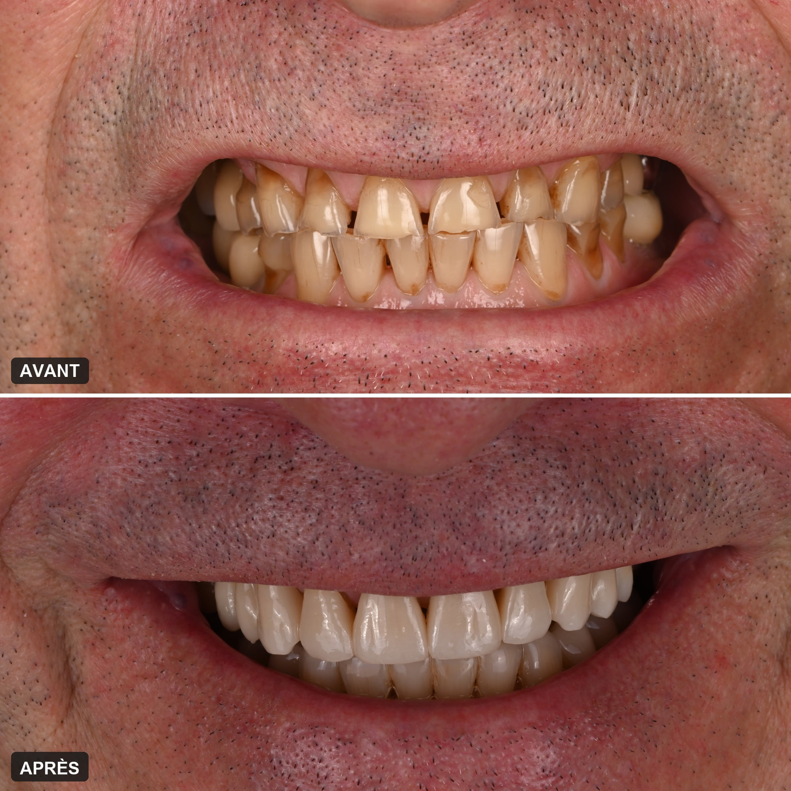

Accueil › Patient › Bruxisme
Le sujet
Bruxisme
Serrement, grincement, gouttière
Serrer ou grincer des dents n’est pas une maladie en soi, et des dents plates ne prouvent pas qu’on bruxe. Avant de proposer une gouttière, il faut établir si le bruxisme est réel, ce qui use vraiment les dents — le frottement, l’acide, souvent les deux — et ce qui mérite d’être protégé, surveillé ou reconstruit.

Responsable de la consultation des internes en dentisterie esthétique et usures, Pitié-Salpêtrière
1 / 6
Qu’est-ce que le bruxisme ?
C’est une activité des muscles de la mâchoire : on serre ou on grince des dents, pendant le sommeil ou en pleine journée, le plus souvent sans s’en rendre compte. Ce n’est pas automatiquement une maladie : tout dépend de ses conséquences sur les dents, les muscles et les articulations.
Serrer, grincer, contracter
Le bruxisme prend trois formes : le serrement, silencieux ; le grincement, que l’entourage entend parfois la nuit ; et de simples mises en tension de la mâchoire. On peut donc bruxer sans jamais grincer des dents.
La nuit, ou le jour
Le bruxisme du sommeil et celui de l’éveil sont deux situations différentes. La nuit, on ne contrôle rien et l’on ne s’en aperçoit pas. Le jour, le serrement passe tout aussi inaperçu, mais on peut apprendre à le repérer.
Faut-il toujours le traiter ?
Non. Le bruxisme est multifactoriel, et le stress n’en est pas la seule cause. Beaucoup de personnes serrent ou grincent des dents sans aucune conséquence. On s’en occupe quand il abîme les dents ou les restaurations, ou quand il s’accompagne de douleurs.
En bref
- Serrement ou grincement
- La nuit comme le jour
- Souvent sans s’en rendre compte
- Pas toujours une maladie à traiter
- Ce qui compte : ses conséquences
2 / 6
Comment savoir si l’on bruxe ?
Le diagnostic ne repose pas sur une seule observation : selon les cas, il associe l’interrogatoire, les symptômes, l’examen clinique, l’évaluation des muscles et parfois un enregistrement du sommeil. L’aspect des dents participe au raisonnement, mais ne suffit pas.
Les signes qui font y penser
Une mâchoire tendue ou fatiguée au réveil, un grincement entendu par l’entourage, des bords de dents qui s’ébrèchent, des restaurations qui cassent ou se décollent. Aucun de ces signes ne suffit à lui seul : c’est leur réunion, et l’examen, qui orientent.
Des dents plates ne suffisent pas
C’est l’idée reçue la plus répandue. Une revue de la littérature publiée en 2024 conclut que la présence d’une usure ne permet pas, à elle seule, d’affirmer un bruxisme. Il faut distinguer l’existence d’une usure, sa cause, l’existence éventuelle d’un bruxisme, et le rôle réel de ce bruxisme dans sa progression.
Bruxisme et douleurs : deux questions distinctes
On peut bruxer sans douleur, avoir des douleurs sans usure marquée, et avoir une usure sans bruxisme actif. Les douleurs des muscles ou de l’articulation de la mâchoire demandent une analyse à part : elles ne se déduisent pas de l’état des dents.
Le diagnostic associe
- L’interrogatoire
- Les symptômes rapportés
- L’examen clinique
- L’évaluation des muscles et de la fonction
- Un enregistrement du sommeil, quand il est indiqué
3 / 6
Le bruxisme use-t-il les dents ?
Il peut y contribuer, mais il n’explique pas tout : des dents usées ne prouvent pas, à elles seules, qu’on bruxe. L’érosion par les acides est souvent en cause, seule ou associée au frottement.
Ce que fait le frottement
Les contraintes mécaniques aplatissent les reliefs, usent le bord des incisives, provoquent des éclats et sollicitent les restaurations. C’est l’attrition : l’usure des dents contre les dents, l’une des formes de l’usure dentaire.
Quand l’acide s’en mêle
Une dent régulièrement exposée aux acides — boissons acides, reflux, vomissements — est ramollie en surface, et s’use alors beaucoup plus vite au moindre frottement. Les consensus sur l’usure érosive décrivent précisément cette interaction entre la chimie et la mécanique : l’acide fragilise, le frottement emporte.
L’erreur classique
« Dents usées, donc bruxisme, donc gouttière. » Une protection mécanique seule ne peut pas contrôler une cause chimique encore active. Devant une usure, je cherche toujours une érosion dentaire avant de conclure au bruxisme.

À rechercher devant une usure
- Un reflux
- Des vomissements
- Des boissons ou des aliments acides
- Une salive moins abondante
- Certains médicaments
- Un serrement ou un grincement
4 / 6
À quoi sert une gouttière, et suffit-elle ?
Une gouttière protège les dents et les restaurations des contacts, surtout la nuit, mais elle ne guérit pas le bruxisme et ne protège pas de l’acide. Elle a sa place quand le frottement est en cause ; elle ne suffit pas quand une érosion entretient l’usure.
Ce qu’elle fait
Elle protège les dents ou certaines restaurations, modifie les contacts entre les dents et aide à gérer certaines situations fonctionnelles. Les dents ne frottent plus l’une contre l’autre : c’est la gouttière qui s’use.
Ce qu’elle ne fait pas
Elle ne fait pas disparaître le bruxisme, et ce n’est pas une prévention universelle de l’érosion dentaire. Son intérêt se décide selon le mécanisme dominant de l’usure et la situation de chacun : la prescrire d’office à toute personne dont les dents sont plates, c’est risquer de passer à côté de la cause.
Après une reconstruction
Quand des dents usées ont été reconstruites chez une personne qui bruxe, une gouttière est souvent prévue pour protéger les restaurations la nuit.
La gouttière
- Protège les dents et les restaurations
- Ne guérit pas le bruxisme
- Ne protège pas de l’acide
- Se décide après le diagnostic
- Souvent utile après une reconstruction
5 / 6
Peut-on reconstruire des dents usées quand on bruxe ?
Oui, lorsque l’indication est posée : les reconstructions collées, peu invasives, disposent aujourd’hui de données cliniques favorables dans les dentitions usées. Le projet tient simplement compte des contraintes.
D’abord la cause, ensuite la reconstruction
Restaurer sur une usure encore active, c’est la voir reprendre sur les restaurations. On commence donc par maîtriser ce qui use — l’acide, le frottement, ou les deux — avant de rendre aux dents ce qu’elles ont perdu.
Un projet pensé pour durer
Chez une personne qui bruxe, le choix des matériaux, le réglage des contacts, l’entretien et la possibilité de réparer comptent autant que la forme des dents. Le composite se répare facilement ; la céramique prend le relais quand les contraintes le justifient. Un même patient reçoit souvent les deux.
En ajoutant, plutôt qu’en taillant
Les techniques collées permettent de reconstruire sans tailler les dents, ou presque : composite stratifié sur les dents de devant, pièces collées sur les molaires, et, quand les dents ont beaucoup perdu, une réhabilitation complète qui leur rend leur hauteur.
Le projet tient compte
- Des contraintes
- Des matériaux
- De l’entretien
- De la façon dont les dents se rencontrent
- De la possibilité de réparer
6 / 6
Quel dentiste consulter pour un bruxisme ?
Un chirurgien-dentiste qui ne s’arrête pas à la gouttière. Il faut d’abord établir si l’on bruxe vraiment, ce qui use les dents, puis décider de ce qui mérite d’être protégé, surveillé ou reconstruit.
Ce qui fait la différence
Distinguer une usure par frottement d’une usure par érosion ; ne pas déduire un bruxisme de la seule forme des dents ; mesurer l’usure pour savoir si elle progresse ; et, quand il faut reconstruire, maîtriser l’analyse de l’occlusion et les techniques collées.
Le Dr Franck Moyal, le bruxisme et les usures
Le Dr Franck Moyal est un chirurgien-dentiste spécialisé dans la prise en charge des usures. À la Pitié-Salpêtrière, il est responsable de la consultation des internes en dentisterie esthétique et usures, et ses confrères l’invitent très régulièrement à enseigner ce sujet.
Au cabinet, à Paris 9e
Il reçoit à son cabinet de Paris 9e les personnes qui serrent ou grincent des dents, pour un bilan d’usure : entretien, examen des dents et de la façon dont elles se rencontrent, photographies et empreinte numérique de référence. C’est la comparaison dans le temps qui dit si l’usure progresse, et ce qu’il faut protéger ou reconstruire.
Pour aller plus loin
Questions fréquentes
Comment savoir si je grince des dents la nuit ?
Souvent, c’est l’entourage qui l’entend. Sinon, une mâchoire tendue ou fatiguée au réveil, des bords de dents qui s’ébrèchent ou des restaurations qui cassent peuvent y faire penser. Le diagnostic repose sur l’entretien et l’examen, parfois sur un enregistrement du sommeil.
Le bruxisme se soigne-t-il ?
Une gouttière ne le fait pas disparaître. On en limite les conséquences : elle protège les dents quand le frottement est en cause, on recherche une érosion associée, et l’on reconstruit les dents usées si c’est nécessaire.
Mes dents sont plates : est-ce forcément du bruxisme ?
Non. Des dents plates ou raccourcies ne prouvent pas un bruxisme : une érosion acide ou plusieurs facteurs combinés sont souvent en cause. Le diagnostic repose sur l’interrogatoire, les symptômes, l’examen et parfois un enregistrement du sommeil, pas sur l’aspect des dents seul.
Peut-on avoir du bruxisme sans grincer des dents ?
Oui. Le serrement, sans bruit, est une forme fréquente de bruxisme, de jour comme de nuit. Des tensions de la mâchoire ou des douleurs musculaires au réveil en sont parfois le seul signe.
Si je porte une gouttière, mes dents ne s’useront plus ?
Pas forcément. Une gouttière protège les dents des contacts et peut modifier les appuis, mais elle ne guérit pas le bruxisme et ne protège pas d’une érosion acide. Son intérêt se décide selon le mécanisme dominant de l’usure.
Le stress est-il la seule cause ?
Non. Le bruxisme est multifactoriel et n’est pas automatiquement une maladie à traiter : son importance dépend du contexte et de ses conséquences sur les dents, les muscles et les articulations.
Faut-il une gouttière après une reconstruction des dents usées ?
Souvent, oui, pour protéger les restaurations la nuit. Le projet tient compte des contraintes, du choix des matériaux et de leur réparabilité.
Distinguer la cause de la conséquence
Un bilan permet de comprendre la situation et les options possibles, avant tout engagement.
Prendre rendez-vousSources scientifiques
Les références ci-dessous soutiennent les principaux messages cliniques de cette page.
- Bronkhorst H, Kalaykova S, Huysmans MC, Loomans B, Pereira-Cenci T. Tooth wear and bruxism: A scoping review. J Dent. 2024;145:104983. — DOI : 10.1016/j.jdent.2024.104983 — PubMed
- Lobbezoo F, Ahlberg J, Raphael KG, et al. International consensus on the assessment of bruxism: Report of a work in progress. J Oral Rehabil. 2018;45(11):837–844. — DOI : 10.1111/joor.12663 — PubMed
- Carvalho TS, Colon P, Ganss C, et al. Consensus report of the European Federation of Conservative Dentistry: erosive tooth wear—diagnosis and management. Clin Oral Investig. 2015;19(7):1557–1561. — DOI : 10.1007/s00784-015-1511-7 — PubMed
- Schlueter N, Amaechi BT, Bartlett D, et al. Terminology of Erosive Tooth Wear: Consensus Report of a Workshop Organized by the ORCA and the Cariology Research Group of the IADR. Caries Res. 2020;54(1):2–6. — DOI : 10.1159/000503308 — PubMed
- Fan J, Wang B, Wang L, et al. Clinical performance of minimally invasive full-mouth rehabilitation using different materials and techniques for patients with moderate to severe tooth wear: a systematic review and meta-analysis. Clin Oral Investig. 2025;29(2):96. — DOI : 10.1007/s00784-025-06181-z — PubMed
- Chantler JGM, Pirc M, Strauss F, et al. Rehabilitation of the Worn Dentition With Direct and Indirect Minimally Invasive Concepts—A Systematic Review and Meta-Analysis. J Esthet Restor Dent. 2025;37(3):690–701. — DOI : 10.1111/jerd.13384 — PubMed